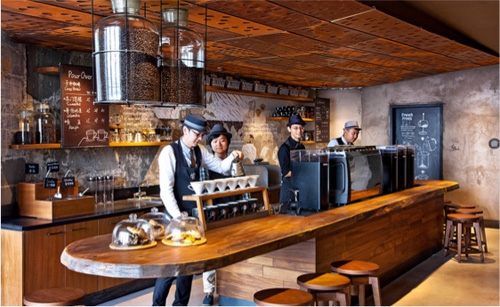

1999 星巴克大陆第一家门店
星巴克于1999年1月，在北京中国国际贸易中心开设中国大陆第一家门店。对星巴克来说，中国市场目前已发展成为仅次于美国的星巴克第二大市场。
2,100 多家门店遍布超过100个城市
目前，星巴克已经在中国100多个城市开设了超过2100家门店，拥有30,000名身穿绿围裙的星巴克伙伴。这一独特优势使我们能够在每一天，通过每一家星巴克门店，践行我们的承诺。
460,000+ 小时社区服务
进入中国以来，星巴克始终致力于回馈社会，对于中国社会的发展做出自己的一份贡献，在地方和全国范围内开展企业社会责任项目。自2011年起，星巴克中国的伙伴和志愿者们一共贡献了超过46万小时的社区服务，增进了与社区和顾客的情感联系。
在中国，星巴克是当之无愧的咖啡知识和咖啡专业技能方面的领头羊，并始终坚持着自己的传统和特色，为顾客献上一流的咖啡产品，以及其他优质的饮料与食品。中国人有饮茶的传统，而星巴克却在这样一个饮茶社会里营造起了良好的咖啡文化。星巴克门店的氛围颇似传统中国茶馆，一个放松心情、闲谈小聚的场所，一间可以与亲朋好友谈天说地的公共客厅。 而星巴克全球如一的独特星巴克体验，优质人性化的服务及其“第三空间”理念也引起了中国消费者的广泛共鸣。
星巴克中国的伙伴与世界各地的伙伴一样热情、真诚、体贴、博学、充满激情。他们热爱星巴克文化，积极参与培训，将星巴克驰名世界的优质服务带到中国。他们是星巴克与顾客之间的桥梁，也是星巴克品牌价值的载体和体现。正是这些伙伴以他们的热情和专业，在为顾客们提供一流的服务的同时，将星巴克的文化和精神内涵传递给我们的顾客。
星巴克在为消费者提供始终如一的优质星巴克体验的同时，也一直致力于提升和改进我们的顾客体验。在对产品质量和服务精益求精的基础上，星巴克强调创新，强调产品和服务的个性化，强调不断给消费者带来愉悦和惊喜。同时，星巴克充分尊重中国历史悠久的传统文化，在门店设计、地方食品和饮料供应等方面，完美地将当地习俗融合到星巴克体验之中。进入中国市场以来，先后推出了多种深受中国消费者喜爱的具有中国特色的饮料、食品和商品。包括星巴克月饼、星冰粽、黑芝麻抹茶星冰乐、中式星巴克茶、福满栗香玛奇朵、如意桃花拿铁、辣意椒香摩卡以及专为中国春节和中秋节设计制作的生肖储蓄罐和随行杯等等。与此同时，星巴克在门店设计方面也更多地融入本土元素，如北京的前门店、成都的宽窄巷子店、福州三坊七巷店等，都以浓郁的当地特色为顾客带来了独特的星巴克门店体验。
在星巴克，员工被称作“伙伴”。因为他们除了拥有保险、医疗等方面的福利外，还拥有获得公司“咖啡豆股票”的权利，真正成为公司的一员。星巴克为伙伴提供实现梦想的平台，也坚信把伙伴利益放在第一位，尊重他们所做出的贡献。除了完善的福利体系之外，星巴克还十分重视对伙伴进行长期的咖啡知识培训。他们是星巴克与顾客之间的桥梁，也是星巴克品牌价值的载体和体现。正是这些伙伴以他们的热情和专业，在为顾客们提供一流的服务的同时，将星巴克的文化和精神内涵传递给我们的顾客。
 北京嘉里中心旗舰店
星巴克在中国发展的同时，也带来了星巴克的核心价值—融入并回馈当地社会。通过各种方式与所运营的社会建立深层次的连接是星巴克一贯的宗旨。
进入中国以来，星巴克始终致力于回馈社会，对于中国社会的发展做出自己的一份贡献，在地方和全国范围内开展企业社会责任项目。自2011年起，星巴克中国的伙伴和志愿者们共近10万人次贡献了超过27万小时的社区服务，增进了与社区和顾客的情感联系。
2014年6月，我们很高兴地在北京宣布星巴克基金会在中国启动一项为期三年共计300万美元的公益投入，其中150万美元（约930万元人民币）将用于星巴克和中国宋庆龄基金会的一个全新项目——“星巴克中国青年领导力发展项目”。该项目旨在帮助青年人在领导能力、社会责任意识等方面得到提升。预计将有1,500位来自全国各大城市和农村，包括贫困地区的大学生从中获益。